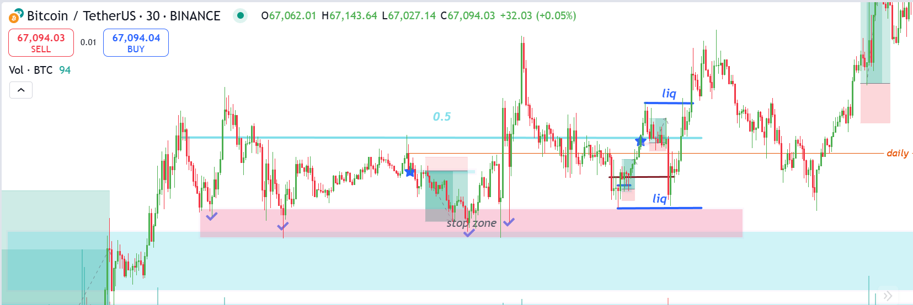
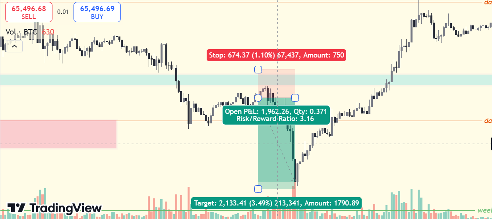
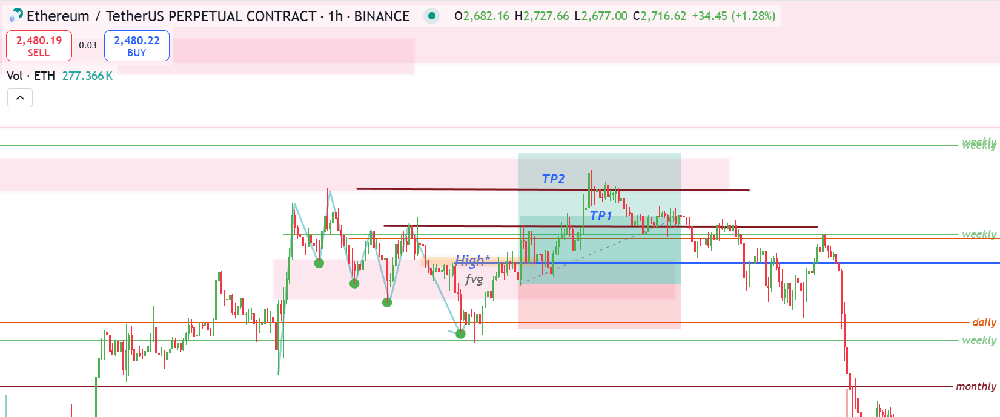

Understanding different strategies is essential to limit your risks and increase your chances of success in trading. It’s important to use strategies like trend following, risk-reward analysis, and technical indicators.
Trend Following
One of the most commonly used strategies in trading is trend following. This involves identifying the direction of the market and aligning your trades with the dominant trend. Traders who follow this strategy aim to 'ride the wave' of the market, ensuring they only make trades in the direction of the current trend.

Figure 1: An example of a trend-following strategy in action.
Risk Management in Trading
Risk management is the cornerstone of trading success. It involves identifying potential risks and taking steps to minimize losses. Using stop-loss orders, diversifying your portfolio, and understanding market trends are crucial strategies.
Key Risk Management Strategies: Always use stop-loss orders to limit potential losses. Diversify your investments to avoid putting all your money into one asset. Keep emotions in check and avoid impulsive trades.

Risk management strategies help traders limit their losses.
Understanding Technical Indicators
Technical indicators, such as moving averages, Relative Strength Index (RSI), and Bollinger Bands, help traders identify market conditions and potential reversals. By learning to read these indicators, traders can make more informed decisions and avoid costly mistakes.

Figure 2: Commonly used technical indicators in trading.